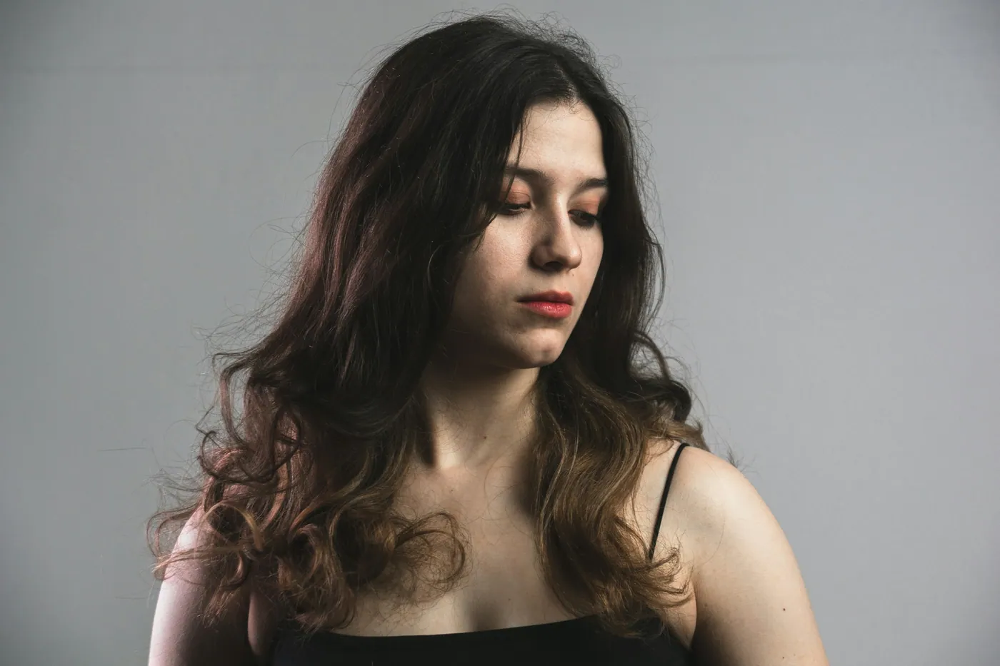
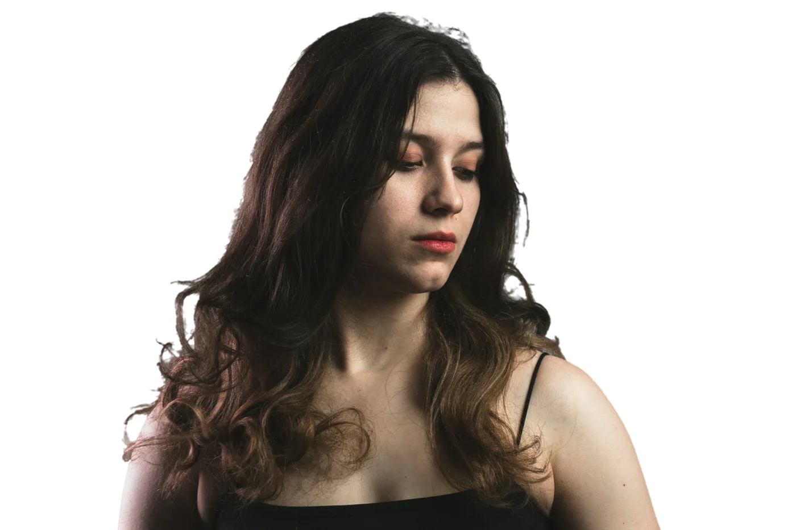

Remove Background
Wavy hair on a busy backdrop is the hard case. High detail mode keeps the loose strands and gives clean edges, and the result is saved with a transparent background.
- Refine brush to paint an edge back or erase a leftover.
- Transparent, white or any colour, square for marketplace listings.
Photo: maks_d on Unsplash. High detail, smoothing off.